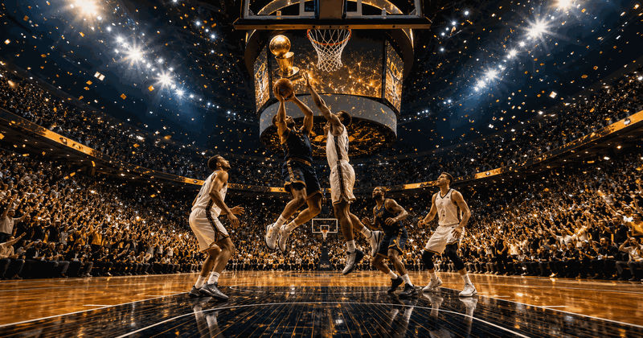
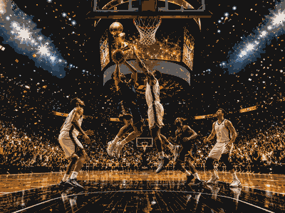

basketball event guide
NBA Finals
A compact OneSliders guide to what the event is, how the current edition works and which parts matter most.
Use the year switcher for recent editions. The selected edition stays inside this framed sport view.

More basketballInterested in more basketball?Explore related events, places and calendar moments.
NBA Finals 2026 in USA / Canada
NBA Finals guide
NBA Finals belongs in the sport, basketball, nba finals collection on OneSliders. Use this page as the compact evergreen entry point: start with what the event is, then scan the current edition details, location cues, schedule context and links back into the wider topic. The page is kept short by design, but it should still give enough unique context to distinguish this event from nearby fixtures, annual editions and broader category listings.